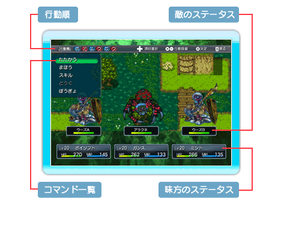

19 |
戦闘画面 |
 |
ストーリーイベントで戦闘が始まった場合や、ダンジョンでボスに遭遇した場合、ランダムイベントで戦闘が始まった場合などは、戦闘に突入します。 HP（ヒットポイント）が0になると戦闘不能になり、味方全員が戦闘不能になると負けです。 戦闘終了後に、戦闘不能も含め、HP・MPは全回復するので、街などで回復する必要はありません。 ■戦闘画面について

◆行動順このターンでの敵と味方の行動順です。 行動順についてはP.20で詳しく説明しています。 ◆コマンド一覧（主人公のみ） たたかう…武器で攻撃してダメージを与えます。 まほう…魔法を使用します。 スキル…スキルを使用します。 どうぐ…持っている道具を使用します。 ぼうぎょ…防御して、被ダメージを減らします。 ※まほうとスキルは、P.12でも説明しています。 ※仲間の行動を選択することはできません。 ◆敵のステータス 敵の名前とHPです。 状態異常になった場合、ステータスの上にアイコンが表示されることがあります。 ◆味方のステータス 味方のレベル、名前、HP、MPです。 状態異常になった場合、ステータスの上にアイコンが表示されることがあります。 ■試合観戦時の視点の切り替えについて 武術大会モードでプレイヤーチーム以外の試合を観戦をしている時、＋ボタン、－ボタンで観戦の視点を切り替えることができ、現在と逆のチームの視点から試合を観戦することができます。 ※武術大会モードについては、P.22～P.25をご確認 ください。 ■状態異常について 戦闘中に魔法やスキルの影響で状態異常になった場合、アイコンが表示されることがあります。アイコンが表示される状態異常については以下のようなものがあります。 毒に冒された状態。 徐々にHPが減少します。 闇で視界を失った状態。 攻撃が空振りしやすくなります。 静寂状態。 魔法を使うことができなくなります。 スキル使用禁止状態。 スキルを使うことができなくなります。 麻痺状態。選択した通りの行動ができない事があります。 混乱した状態。行動を選択することができなくなり、めちゃくちゃな行動をとります。 魅了状態。行動を選択することができなくなり、敵に有利な行動をとります。 眠った状態。 行動する事ができなくなります。 アニマル状態。攻撃しかできなくなりますが、攻撃力が上昇します。 |
 |
 |
 |